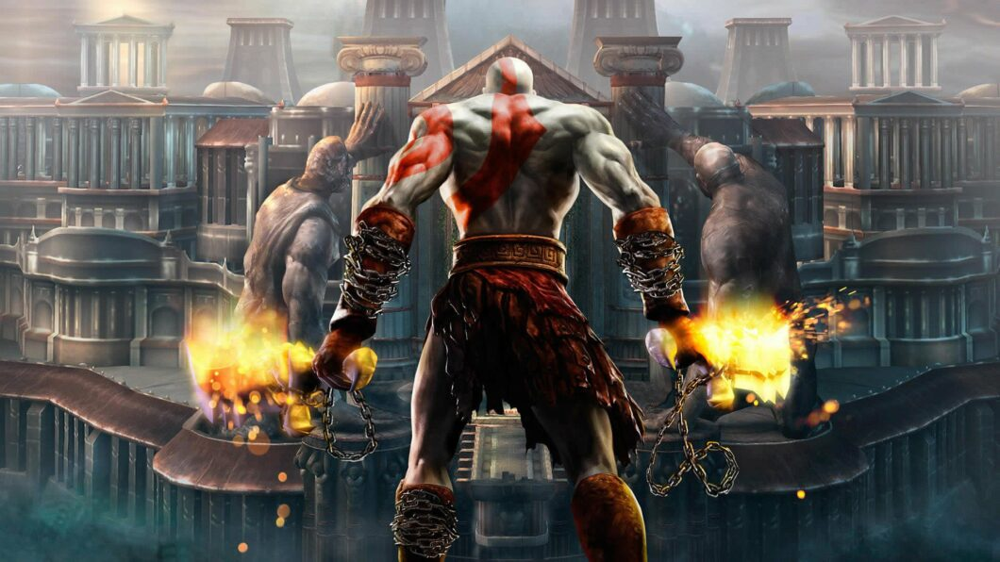

Cronologia
| Jogos |
Imagem |
Sinopse |
Jogar |
| God Of War Ascension |
 |
God of War Ascension é um jogo que não acrescenta informações importantes para a franquia. Entretanto, apresenta algumas mudanças na jogabilidade como a manipulação do tempo e também a implementação de um modo multiplayer online em que o jogador assume o controle de um campeão dos deuses.
|
Saiba Mais |
| God Of War Chains Of Olympus |
|
Após abrir mão dos poderes, Kratos descobre que tudo era um plano de Perséfone, a esposa de Hades cujo objetivo era soltar o titã Atlas, fazendo com ele não segurasse mais o Monte Olimpo e no processo matasse a todos, incluindo a própria Perséfone e as almas presentes nos Elíseos. |
Saiba Mais |
| God Of War |
 |
A trajetória de Kratos começou oficialmente em 2005 no game dirigido por David Jaffe. Boa parte de sua história é contada em flashback, com o protagonista saltando da montanha mais alta da Grécia e os fatos apresentados se passando antes desse momento, explicando a história, motivações de Kratos e como ele fez seu pacto com Ares, após estar prestes a perder uma batalha contra os bárbaros do oeste. |
Saiba Mais |
| God Of War Ghost Of Sparta |
 |
Após receber a informação de um oráculo que o fim do Olimpo seria causado por um guerreiro com uma marca, Ares e Atena fazem uma visita ao mundo dos mortais e sequestram Deimos, enquanto ele era criança para evitar que a profecia se completasse. |
Saiba Mais |
| God Of War 2 |
 |
Após assumir o posto de Deus da Guerra, Kratos ataca cidades protegidas por outros deuses. Durante o ataque à cidade de Rhodes, Kratos perde seus poderes ao colocar toda sua energia na Lâmina do Olimpo, enviada por Zeus. |
Saiba Mais |
| God Of War 3 |
 |
God of War III começa com os titãs escalando o Monte Olimpo para enfrentar os deuses. Durante essa primeira batalha, Kratos mata Poseidon, o que gera um cataclismo com inúmeras inundações. |
Saiba Mais |
| God Of War 2018 |
|
God of War lançado para PlayStation 4 em 2018 funciona como um reboot e também como sequência. Agora, Kratos está em um contexto completamente novo na mitologia nórdica — afinal, não sobraram muitos deuses no Olimpo — e, além disso, ele mantém todas as lembranças do que aconteceu na Grécia. |
Saiba Mais |
| God Of War Ragnarok |
|
Mais de cem anos após os acontecimentos de God of War 3, Kratos vive uma vida reclusa na terra dos deuses nórdicos. Aqui, o Deus da Guerra descobre que ele destruiu apenas o mundo Grego, e que a magia de cada terra é forte apenas no local de origem dela, ou seja, o resto do mundo acabou sendo poupado da destruição causada por ele. |
Saiba Mais |